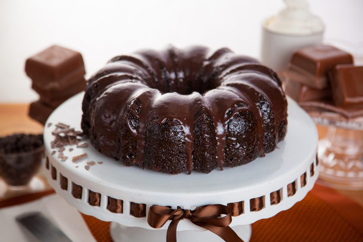

Receita de Bolo de chocolate
O bolo de chocolate é uma delícia irresistível, com sua textura macia e sabor rico. Perfeito para celebrações ou simplesmente para satisfazer um desejo por algo doce.

Ingredientes
- 2 xícaras de farinha de trigo
- 1 xícara de cacau em pó
- 1 colher de sopa de fermento em pó
- 1/2 colher de chá de sal
- 1 xícara de manteiga
- 2 xícaras de açúcar
- 4 ovos
- 1 colher de chá de baunilha
- 1 xícara de leite
- 200g de chocolate meio amargo
- 1 xícara de creme de leite
Ingredientes da Cobertura
Modo de Preparo
- Pré-aqueça o forno a 180°C. Unte e enfarinhe uma forma.
- Em uma tigela, peneire a farinha, cacau, fermento e sal.
- Em outra tigela, bata a manteiga e o açúcar até obter uma mistura cremosa. Adicione os ovos um de cada vez, batendo bem.
- Adicione a baunilha à mistura de ovos e, em seguida, adicione os ingredientes secos alternadamente com o leite.
- Despeje a massa na forma e leve ao forno por 30-35 minutos ou até que um palito saia limpo.
- Pique o chocolate em pedaços pequenos e coloque em uma tigela.
- Aqueça o creme de leite em uma panela até começar a ferver.
- Despeje o creme de leite sobre o chocolate picado. Deixe descansar por alguns minutos e, em seguida, mexa até obter uma mistura homogênea e brilhante.
- Deixe a ganache esfriar um pouco antes de despejar sobre o bolo.
Modo de Preparo da Cobertura